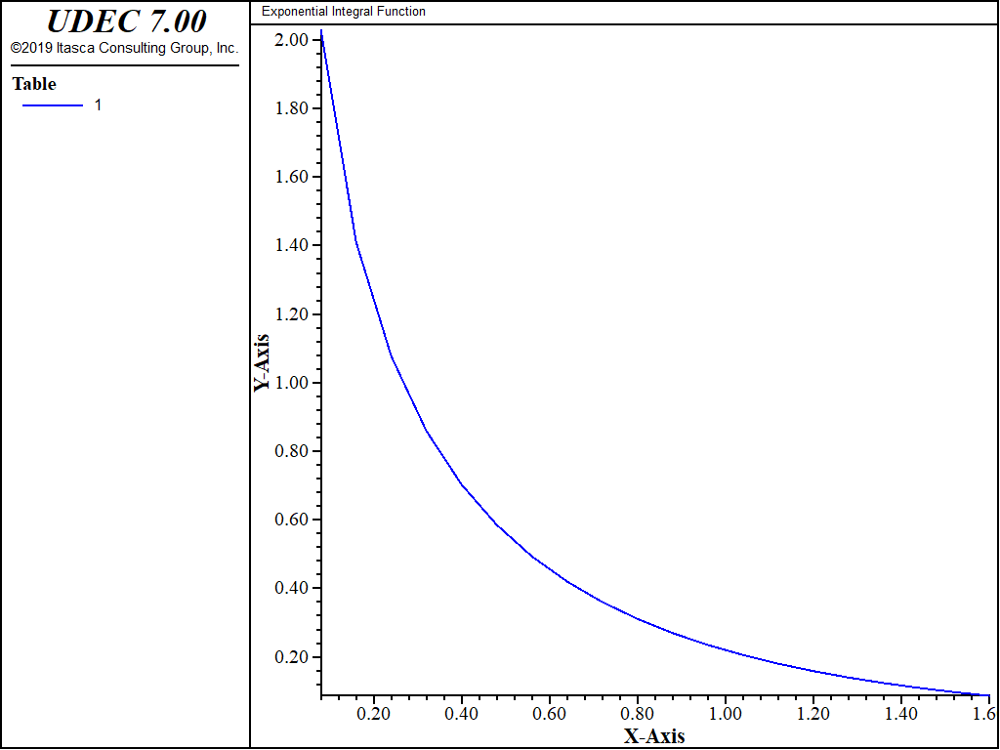

Exponential Integral Function
The file “expint.fis” contains a FISH function that calculates the exponential integral function,
\[E_1(x) = \int_x^\infty {{e^{-t}}\over{t}} dt\]
of a real and positive variable \(x\), using polynomial approximations in sections 5.1.53 and 5.1.54 in Abramowitz and Stegun (1970). The error magnitude is less than \(2×10^{−7}\) for \(x ≤ 1\), and less than \(5 × 10^{−5}\) for \(x > 1\).
The value of \(x\) is defined by e_val, and the function exp int returns the corresponding value of
\(E_1\). Following is a plot of \(E_1\) in the interval \([0,1.6]\).
Data File: expint.dat
model new
model title ' Exponential Integral Function'
program call 'expint.fis'
fish define plot_e1
dx = 1.6/20.
e_val = 0.
loop ii (1,20)
e_val = e_val + dx
table.x(1,ii) = e_val
table.y(1,ii) = exp_int
end_loop
end
@plot_e1
model save 'expint.sav'
Reference
Abramowitz, M., and I. A. Stegun. Handbook of Mathematical Functions. New York: Dover Publications Inc. (1970).

{kind=link}
Figure 1: Exponential integral function
| Was this helpful? ... | UDEC © 2018, Itasca | Updated: Mar 15, 2024 |